Characters
This page is dedicated to the different protagonists or side characters that I plan to use in this game.
Classmates' Favorite Characters
- Nadeem: Mr. IDK
- Logan: Gacha Destroyer
- Clayton: Ghoulo
- Trevor: Kervin (yes I did include myself)
- Mason: Walter
- Anthony: Gacha Destroyer
| Name | Desc. | |
|---|---|---|
| Trevor | Obviously being the narcissist I am I decided to make myself the main character of this game. In all seriousness though, the real reason why I star in the main cast is because all of the main characters were based off of a story I was making up when I was younger starring the several toys around my house and myself. Over time I really grew attached the the whole story I was telling, and I had always wanted to make it into some kind of cartoon. One day I decided to come back to it and start trying to animate these characters I've known for so long. That's sort of how the modern versions of these characters came to be. Sorry about the quick story time but I felt that an explanation was needed. My character uses the color blue in battle. | 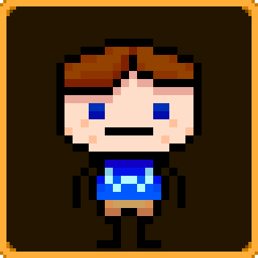 |
| Kervin | Kervin is sort of like the hyperactive character of the group. He's always full of energy to a probably dangerous extent. Kervin has a constant smile on his face in most of his screen-time. I also don't know how but Kervin's weapon of choice just one day was decided to be dual wielded pistols. I genuinely don't know why I decided to just give him a gun one day but it stuck. Kervin uses the color green in battle. | 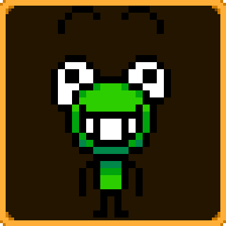 |
| Percy | I wonder where I got the inspiration for this design? Unlike his name, this character is basically meant to be the tough, percervered character. He uses a baseball bat to bash his enemies' skulls in. Percy uses the color purple in battle. | 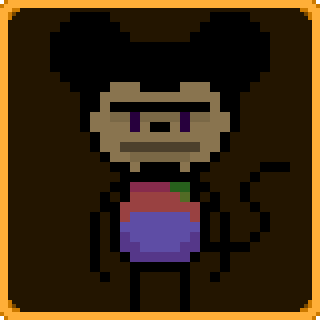 |
| Chunky | Chunky is literally a monkey and that's about it. I haven't really come up with too much else for him. | 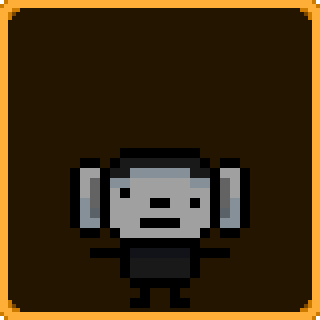 |
| Ghoulo | Ghoulo is based off of an old design that I made when I wanted to make a Super Mario style game. I of course never went through with this idea but looking back at it now it would be an idea I'm willing to pick back up. Ghoulo is the more antisocial shy character. He likes to keep to himself a lot. I didn't exactly want him to just be the character that stays away from interaction and nothing else though. I'm trying to give him some genuine personality in showing genuine annoyance when people bother him. He's still the shy character that doesn't really wanna talk to anyone for the sake of avoiding conflict, but he can get a little bit ticked off at times. | 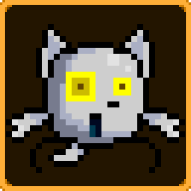 |
| Bert | Bert's life sucks. To elaborate: before joining the rest of these characters he is completely homeless. The only issue now is that he still basically is. When given a room at the base he is directed to sleep outside in the garbage dump section of the building for comedic purposes only and genuinely no other reason. The only person that really likes him is Bob being his best and only real friend. I should note that Bob also sleeps outside in the garbage dump. | 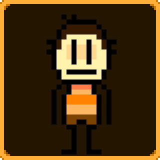 |
| Bob | Bob's an odd case. He's a bit of everything. Bob is an Australian pirate who also doubles as a penniless hobo living in the garbage dump with Bert. Bob is planned to have a whole chapter centered around him where you travel across the world of him dreams created by the dragon Fuzangyawn. | 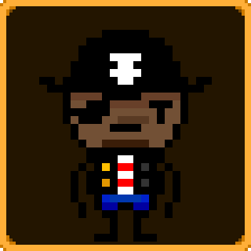 |
| Larry | Larry is very conplicated. He's actually the child of Satan himself. Now, you're asing, "What in the world do you mean?". Well, the whole story is that once Larry was born Saatan sent Larry onto the mortal plane to be a sort of errand boy. Over time though Larry just started doing all the work. Now Larry's sort of on his own mission to take over the world. The only issue is that he's no where near powerful enough yet nor is he in his final form. Larry only really sticks around with the good side to try an take advantage of them. He doesn't really care what good happens to the world as long as it'll eventually be his. He also runs a childrens show and puts on this cartoonish appearance to appease to society and gain the trust of the people he soon plans to rule. | 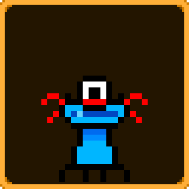 |
| Walter | Walter is a dog. He is also best friends with Kervin. The end. Walter is not a playable character. | 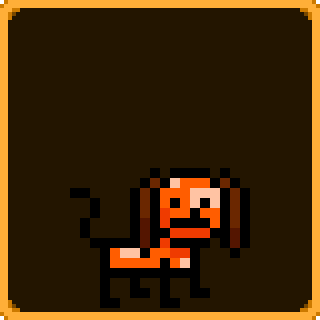 |
| Tgenntge | He's got an odd name, but this character is just based off of one of my friends online. I would use his real name but he doesn't really like it being shared. I insetad went for his online alias "Tgenntge". Tg (for short) is basically the mad scientist of the bunch. We wanted to make a Minecraft world based on all of this and he likes messing with redstone which is basically how you make contraption in the game. This sort of solidified his role as the mechanic. Tg would also be a secret unlockable character. | 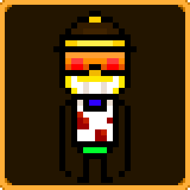 |
| Sodahero | This is yet another one of my friends. His name (Joel) he doesn't mind being said but the character itself I believe goes by this name. I'm actually not too sure as he changes his username a lot so This might change in the near future. His character would play a very minor role compared to other main characters but I do plan to give him a decent portion of screentime. Sodahero is not playable. | 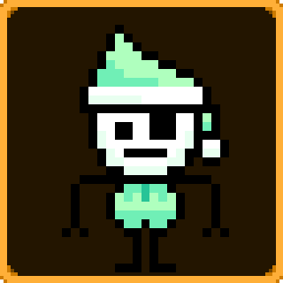 |
| Gacha Destroyer | The Gacha destroyer (otherwise known as the GD) is your firendly neighborhood police officer, Gacha Destroyer severely despises the popular game "Gacha Life" and so does everyone in this near perfect world (near perfect because of the disliking of Gacha Life). The Gacha Destroyer's job is not to imprison felons but to imprison gacha kids. This character is based off of one of my friends named Wyatte. He didn't make it into Old Colony but hopes to tranfer eventually. Gacha Destroyer is not a playable character but is the first miniboss of the game. | 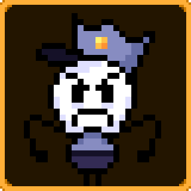 |
| Mr. IDK | Mr. IDK doesn't have too much to the character himself but he's meant to be my friend (at this school) Tyler Arruda. | 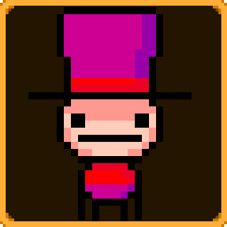 |